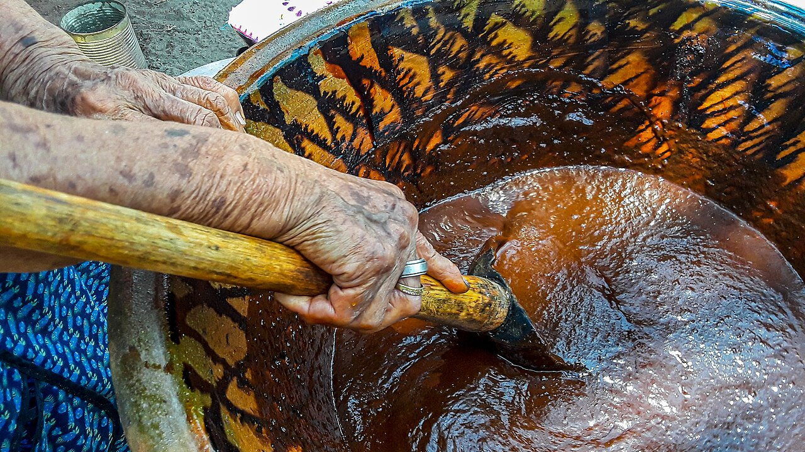
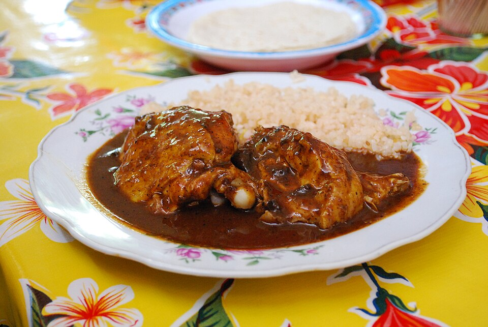
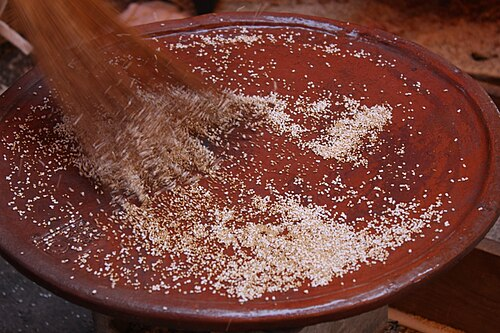
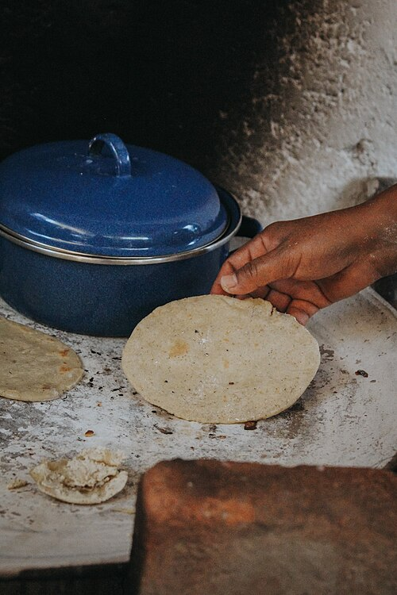
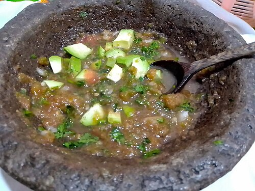

Cocina chiapaneca y oaxaqueña en Tuxtla
Mole negro, tlayudas y tamales en San Roque. Martes a domingo, 8:30 a 18:00.
Visita en San Roque
Barrio San Roque
Barrio San Roque
Tuxtla Gutiérrez, Chiapas Ver la zona
Tuxtla Gutiérrez, Chiapas Ver la zona
- Martes a domingo
- 8:30 a 18:00
- Lunes
- Cerrado
- ComedorPlanta baja, sin escalones

Cocina de comal y molcajete
Las tortillas, la salsa y los tamales se hacen cada mañana, de 7:00 a 8:30.
Ver el menú


